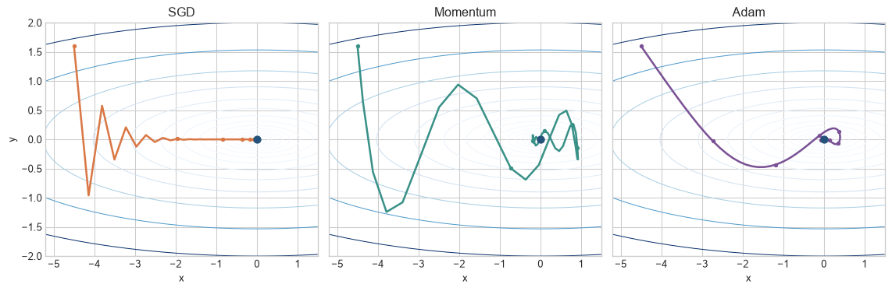
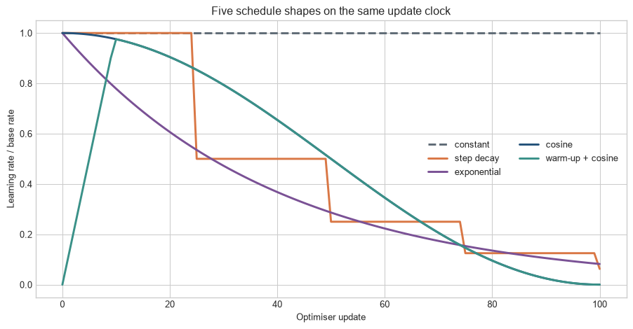

Turning gradients into a sequence of parameter updates
The problem
Chapter 12 described how gradients can remain usable as activations change through a network. A usable gradient still does not specify the next parameter value. A mini-batch gradient is noisy, coordinates can have very different scales, and the update scale that is tolerable at the start of training may be wasteful or unstable later. An optimiser specifies how a sequence of gradients becomes a sequence of parameter changes.
Optimisers transform gradients; they do not replace them. Momentum retains a direction from earlier updates. Adam combines moving averages of gradients and squared gradients. AdamW applies weight decay outside that adaptive transformation. A learning-rate schedule changes the overall update scale against an explicit training clock. The next result depends on the optimiser state as well as the current parameters and gradient.
A loss with unequal directions
The chapter repeatedly uses an elongated quadratic loss,
\[
L(x,y)=\frac{1}{2}(x^2+20y^2).
\]
The surface is twenty times steeper in the \(y\) direction than in the \(x\) direction. One global learning rate must therefore make progress along a shallow direction without becoming unstable along a steep one. This simple geometry exposes why update history and coordinate scaling can matter.
The figure starts every method at the same point and gives each the exact gradient of the same loss. Follow the paths across the narrow contours: their differences come from how each rule retains history and scales coordinates. The displayed settings make those mechanisms visible; they do not establish a general ranking.
Code
import numpy as npimport matplotlib.pyplot as pltplt.style.use("seaborn-v0_8-whitegrid")blue, teal, orange, purple, grey ="#24527a", "#3a9188", "#d97745", "#7a5195", "#5f6b76"def quadratic_loss(theta):return0.5* (theta[0]**2+20* theta[1]**2)def quadratic_gradient(theta):return np.array([theta[0], 20* theta[1]])def optimise(method, steps=100): theta = np.array([-4.5, 1.6], dtype=float) velocity = np.zeros(2); first = np.zeros(2); second = np.zeros(2) path = [theta.copy()]for step inrange(1, steps +1): gradient = quadratic_gradient(theta)if method =="SGD": theta -=0.08* gradientelif method =="Momentum": velocity =0.85* velocity + gradient theta -=0.03* velocityelse: first =0.9* first +0.1* gradient second =0.999* second +0.001* gradient**2 first_hat = first / (1-0.9**step) second_hat = second / (1-0.999**step) theta -=0.18* first_hat / (np.sqrt(second_hat) +1e-8) path.append(theta.copy())return np.array(path)paths = {name: optimise(name) for name in ["SGD", "Momentum", "Adam"]}x = np.linspace(-5.2, 1.5, 300); y = np.linspace(-2, 2, 300)X, Y = np.meshgrid(x, y); Z =0.5* (X**2+20* Y**2)fig, axes = plt.subplots(1, 3, figsize=(12, 4), sharex=True, sharey=True)for ax, (name, path), colour inzip(axes, paths.items(), [orange, teal, purple]): ax.contour(X, Y, Z, levels=np.geomspace(0.04, 40, 14), cmap="Blues", linewidths=.75) ax.plot(path[:,0], path[:,1], color=colour, marker="o", markevery=10, markersize=3, linewidth=1.9) ax.scatter([0], [0], color=blue, s=45, zorder=3) ax.set_title(name); ax.set_xlabel("x")axes[0].set_ylabel("y")plt.tight_layout(); plt.show()

Figure 14.1: SGD, momentum, and Adam follow different paths across the same elongated loss surface.
The paths should not be read as a ranking. Their hyperparameters were selected to make each mechanism visible, and another loss surface can favour another configuration. The figure shows that an optimiser changes the trajectory even when every method receives the same exact gradient function.
Optimiser and learning-rate schedule. An optimiser transforms gradients into parameter updates and may retain state from earlier updates. A learning-rate schedule changes update scale over training. Both are part of the fitted procedure and must be recorded with the model.
L2 regularisation and decoupled weight decay. L2 regularisation adds a parameter penalty to the objective. Decoupled weight decay shrinks parameters as part of the update rule. They can behave similarly in simple settings but are not generally the same under adaptive optimisation.
Level 1 - Intuition
The gradient and the update are different objects
A gradient describes the local slope of the loss. The optimiser decides how much of that slope becomes the next parameter change. Plain SGD uses the current gradient directly. Momentum also uses the recent direction of travel. Adam compares the current direction with recent gradient magnitudes for each coordinate. The learning rate then controls the overall scale of the resulting update.
This distinction explains why inspecting gradients alone can be misleading. Two parameters can have gradients of the same magnitude but receive different Adam updates because their second-moment histories differ. Conversely, two optimisers can receive the same gradient and move in different directions because one retains momentum from earlier steps.
Momentum accumulates persistent direction
Mini-batch gradients vary because each batch contains different observations. If successive gradients point broadly in the same direction, momentum accumulates them. If one coordinate alternates sign, positive and negative contributions partly cancel. Momentum can therefore reduce zig-zagging across a narrow valley while preserving motion along the valley.
Figure 14.2: Momentum retains a persistent gradient direction while reducing the effect of batch-to-batch variation.
The velocity is smoother but delayed. Momentum does not identify a noise-free gradient; it summarises recent gradients under the assumption that their direction remains informative. A sharp change in the loss geometry can therefore leave the optimiser moving in an outdated direction for several steps.
Adaptive methods use a separate scale for each coordinate
Adam records both a moving average of gradients and a moving average of squared gradients. Dividing by the square root of the second quantity reduces updates in coordinates that have recently received large gradients and enlarges them relative to coordinates with small gradients. This can help when parameters operate on different scales or receive sparse gradients.
Adaptive scaling does not remove the learning rate. It creates an effective learning rate for each coordinate, but the nominal learning rate still multiplies every update. Poor choices can produce instability or negligible progress.
A schedule changes the learning regime over time
Large updates can make rapid progress when parameters are far from a useful solution. Smaller updates allow more precise movement later. Warm-up starts below the target learning rate because early gradients and optimiser moments can be poorly calibrated. Decay reduces the rate as training progresses. A schedule encodes when those changes occur.
The next task is to track the state retained between updates: velocity for momentum, two moments for Adam, and a schedule clock for the learning rate. Level 2 follows those transitions one update at a time.
Level 2 - Mechanics
Plain SGD has no persistent optimiser state
At step \(t\), SGD obtains a mini-batch, computes its gradient \(g_t\), multiplies it by the learning rate \(\eta_t\), and subtracts the result. Once the update has been applied, plain SGD does not need the previous gradient to calculate the next one. Its state consists only of the parameters and the schedule position.
The absence of additional state makes SGD inexpensive. It does not make the trajectory simple. A new mini-batch changes \(g_t\), while curvature can make one learning rate slow in one direction and unstable in another.
The coefficient \(\beta\) determines how strongly earlier gradients persist. With \(\beta=0\), the method reduces to SGD. Values near one retain a longer history. Some texts multiply \(g_t\) by \((1-\beta)\) and interpret \(v_t\) as an exponential average. The numerical value of the learning rate changes between these conventions, so the equation or framework implementation must be stated.
For gradients \(g_1=2\), \(g_2=1\), and \(g_3=-1\) with \(\beta=0.9\) and \(v_0=0\), the velocities are \(2\), \(2.8\), and \(1.52\). The third gradient points backwards, but the accumulated velocity remains positive. Momentum resists a single reversal because the earlier direction still contributes.
Adam maintains two moment estimates
Adam first updates an exponential average of the gradient and of its square. It corrects both averages for their initialisation at zero, divides the corrected first moment by the square root of the corrected second moment, and applies the learning rate. Epsilon prevents division by zero.
Code
gradients = np.array([2.0, 1.0, -1.0])beta1, beta2 =0.9, 0.999m, v =0.0, 0.0rows = []for t, gradient inenumerate(gradients, start=1): m = beta1*m + (1-beta1)*gradient v = beta2*v + (1-beta2)*gradient**2 m_hat = m/(1-beta1**t); v_hat = v/(1-beta2**t) rows.append([t, gradient, m, v, m_hat/np.sqrt(v_hat)])print(" step grad m v scaled direction")for row in rows:print(f" {row[0]:>3}{row[1]:>4.1f}{row[2]:>7.3f}{row[3]:>7.4f}{row[4]:>7.3f}")
step grad m v scaled direction
1 2.0 0.200 0.0040 1.000
2 1.0 0.280 0.0050 0.932
3 -1.0 0.152 0.0060 0.397
The scaled direction is not the gradient itself. It reflects the balance between recent direction and recent squared magnitude. Bias correction is largest in the first steps because both moment estimates began at zero.
Figure 14.3: Adam converts gradients with very different scales into more comparable coordinate updates.
The first coordinate’s raw gradient is much larger. Adam’s second-moment division brings the update directions closer in scale. They are not identical because their histories differ. Multiplying the right panel by the nominal learning rate gives the actual parameter-update magnitudes before weight decay.
Weight decay can be coupled or decoupled
L2 regularisation adds \(\lambda\theta\) to the gradient of the data loss. Under plain SGD, this produces the same update as multiplying the parameter by \((1-\eta\lambda)\) and then applying the data gradient. An adaptive optimiser rescales the added L2 gradient coordinate by coordinate, so the equivalence no longer holds.
AdamW applies weight decay directly to the parameter, separately from the moment-normalised gradient (Loshchilov and Hutter 2019). The distinction is operational: weight_decay can mean different mathematics depending on the optimiser and framework version. Chapter 10 introduced weight penalties as regularisation; this chapter specifies how the optimiser applies them.
Figure 14.4: Coupled L2 regularisation and decoupled AdamW weight decay produce different shrinkage under adaptive scaling.
With no data gradient, decoupled weight decay shrinks every parameter by the same proportion. Coupled L2 enters Adam’s moment calculations, so the adaptive denominator changes the shrinkage. The constructed example isolates that mechanism; training normally combines decay with a non-zero data gradient.
Schedules are functions of an explicit clock
A schedule maps a step counter to a learning rate. The counter may advance after each mini-batch, optimiser update, or epoch. Gradient accumulation makes this distinction visible: four forward and backward micro-batches can produce one optimiser update. A schedule stepped after every micro-batch runs four times faster than one stepped after each parameter update.
Code
t = np.arange(101); base =1.0constant = np.ones_like(t, dtype=float)step_decay =.5** (t//25)exponential = np.exp(-.025*t)cosine =.5*(1+np.cos(np.pi*t/100))warmup_cosine = cosine.copy(); warmup=10warmup_cosine[:warmup] = np.arange(warmup)/warmupfig, ax=plt.subplots(figsize=(9.5,5))for values,label,colour,style in [ (constant,"constant",grey,"--"),(step_decay,"step decay",orange,"-"), (exponential,"exponential",purple,"-"),(cosine,"cosine",blue,"-"), (warmup_cosine,"warm-up + cosine",teal,"-")]: ax.plot(t,values,label=label,color=colour,linestyle=style,linewidth=2.2)ax.set_xlabel("Optimiser update"); ax.set_ylabel("Learning rate / base rate")ax.set_title("Five schedule shapes on the same update clock"); ax.legend(ncol=2)plt.tight_layout(); plt.show()

Figure 14.5: Learning-rate schedules encode different assumptions about when large and small updates are useful.
Warm-up is visible only at the beginning. Step decay makes discrete changes; exponential and cosine schedules change continuously. Cosine decay reaches zero here because the horizon is known. A schedule should be documented by its formula, base and minimum rates, warm-up length, total horizon, and clock.
The mechanisms are easiest to audit once their state variables and denominators are written down. Level 3 derives the update equations, then makes the corresponding framework calls and restart state explicit.
Level 3 - Mathematics & Code
Momentum is a weighted sum of past gradients
Expanding the recurrence \(v_t=\beta v_{t-1}+g_t\) with \(v_0=0\) gives
Recent gradients receive larger weights; earlier gradients remain with exponentially decreasing influence. The approximate memory timescale is \(1/(1-\beta)\) steps. For \(\beta=0.9\) this is about ten steps; for \(0.99\) it is about one hundred. This is an interpretation, not a hard cutoff.
Nesterov momentum evaluates or approximates the gradient after looking ahead along the current velocity. Framework conventions differ, so reproducing a result requires the optimiser name, momentum coefficient, dampening, Nesterov flag, and learning-rate schedule rather than the word “momentum” alone. Sutskever et al. (2013) show how momentum and initialisation interacted in the training of deep and recurrent networks available at the time.
The effective coordinate learning rate is \(\eta_t/(\sqrt{\hat v_t}+\varepsilon)\), but the numerator \(\hat m_t\) also carries history. Describing Adam as “a separate learning rate per parameter” is therefore incomplete.
AdamW separates regularisation from moment estimation
where \(m_t\) and \(v_t\) are calculated from the data-loss gradient rather than a gradient augmented with \(\lambda\theta_t\). Some implementations apply decay in an algebraically reordered but equivalent form. Parameter groups commonly exclude biases and normalisation scales from decay; that choice should be reported rather than assumed.
The state must survive between calls. Reinitialising it at every step removes Adam’s history and repeatedly invokes first-step bias correction. Saving only model parameters is therefore insufficient for an exact training restart.
PyTorch separates gradient calculation, optimiser update, and schedule update
loss: 1.1916 next learning rate: 0.0002999259840548597
loss.backward() produces gradients. optimizer.step() transforms them using the stored moments and changes parameters. scheduler.step() changes the learning rate used by a later optimiser update. Their order matters. The correct scheduler timing depends on the scheduler’s documented convention, especially for schedules defined by epochs rather than updates.
Code
# Optimisers and schedulers carry state beyond the visible parameters.optimizer_state=optimizer.state_dict()scheduler_state=scheduler.state_dict()print("optimiser state fields:",optimizer_state.keys())print("parameter-state entries:",len(optimizer_state["state"]))print("scheduler state fields:",scheduler_state.keys())
optimiser state fields: dict_keys(['state', 'param_groups'])
parameter-state entries: 4
scheduler state fields: dict_keys(['T_max', 'eta_min', 'base_lrs', 'last_epoch', '_step_count', '_is_initial', '_get_lr_called_within_step', '_last_lr'])
AdamW’s parameter-state entries contain the moving moments and step counters that determine the next update. The scheduler separately records its position in the learning-rate schedule. These objects must be serialised for faithful continuation, but they are only part of a complete recovery checkpoint. Chapter 14 defines that broader contract, including model, random, sampler, scaler, and accumulation state.
Level 4 - Research & Systems
Optimiser choice is conditional on the training regime
Adam often reduces the tuning required to obtain early progress when gradient scales differ, while well-tuned SGD with momentum remains effective in many vision settings. These are empirical patterns, not a universal ranking. Architecture, normalisation, batch size, data ordering, regularisation, training horizon, and schedule can reverse a comparison. A fair experiment allocates each optimiser an appropriate learning-rate search and reports the compute used for tuning.
The original Adam paper gives an algorithm and convergence analysis under stated assumptions (Kingma and Ba 2015). Later work constructed settings in which Adam does not converge and proposed AMSGrad as one response (Reddi, Kale, and Kumar 2018). This does not show that Adam generally fails in neural-network training. It shows that popularity and strong empirical performance do not supply a universal convergence guarantee.
Learning-rate schedules encode a training budget
Cosine annealing was used in SGDR with scheduled warm restarts (Loshchilov and Hutter 2017). The restart raises the learning rate again; it does not restore earlier model parameters. Many current applications use a single warm-up followed by cosine decay without restarts. Calling both configurations “cosine” hides a substantive difference.
Warm-up is tied to an early-training mechanism and a clock. Goyal et al. (2017) used gradual warm-up with a linear learning-rate scaling rule for large-batch ResNet-50 training. That result does not imply that the same warm-up length or batch-scaling rule transfers unchanged to another architecture. Schedule parameters should be treated as part of the tested training configuration.
When the total number of updates changes, a schedule can change even if its plotted shape looks similar. Training for ten epochs on twice as much data produces twice as many updates at a fixed batch size. Token-based language-model training may define the horizon in tokens rather than examples or epochs. The schedule should use a unit that remains meaningful for the experiment.
Accumulation, clipping, and mixed precision change update timing
Gradient accumulation sums or averages gradients across micro-batches before optimizer.step(). Optimiser moments and learning-rate schedules should usually advance once per parameter update, not once per micro-batch. Gradient clipping is applied after gradients are available and before the optimiser consumes them. With mixed precision, gradients must be unscaled before clipping so that the threshold refers to their true scale.
Skipped mixed-precision updates require care. If a non-finite gradient causes the scaler to skip optimizer.step(), advancing the schedule can desynchronise learning rate from successful parameter updates. Framework behaviour should be checked rather than inferred from the apparent loop structure.
Optimiser state has memory and communication costs
SGD without momentum stores no per-parameter optimiser tensor. Momentum stores one. Adam and AdamW ordinarily store first and second moments, often in higher precision than the model parameters. For a large model, those tensors can require more memory than the weights themselves once gradients and master copies are included.
Chapter 15 quantifies this cost under explicit dtype and replication assumptions. The byte count is not an intrinsic property of the optimiser name: master weights, gradient precision, sharding stage, and implementation determine what resides on each device.
Distributed training can shard parameters, gradients, and optimiser states across workers. Sharding reduces per-device memory but introduces communication before a worker can update or use a parameter. Fused optimisers combine many small update operations into fewer kernels and reduce launch and memory-traffic overhead. These changes should preserve the intended equations within documented numerical tolerances.
An optimiser audit follows update ratios and state
Loss alone does not identify why training is slow or unstable. An audit should record gradient norms, parameter norms, update norms, and the ratio \(\|\Delta\theta\|/\|\theta\|\) by layer or parameter group. It should also record learning rate, moment norms, weight decay, clipping frequency, skipped steps, and non-finite values.
Three tests expose common implementation errors. First, run one fixed batch repeatedly and verify that the loss can decrease; failure indicates a local optimisation or implementation problem rather than data ordering. Second, save and reload a checkpoint, then compare the next update with an uninterrupted run. Third, log the learning rate against successful optimiser updates and confirm that warm-up and decay occur at the intended positions.
Optimiser comparisons should report validation performance against both update count and consumed compute. A method that reaches a loss in fewer steps may still take longer if each step communicates more data or uses a less efficient kernel.
Common misconceptions
The optimiser calculates gradients. Backpropagation calculates gradients; the optimiser converts them into parameter changes.
Momentum is only a larger learning rate. It creates a history-dependent direction and can cancel alternating components.
Adam removes the need to tune a learning rate. Its adaptive denominator modifies coordinate scales, while the nominal rate still controls the update.
Adam always converges faster than SGD. The result depends on the metric, tuning budget, architecture, data, and training horizon.
The second moment is the gradient variance. Adam tracks an exponential average of squared gradients, not a centred variance.
Bias correction is optional after the first batch. Its influence decays over multiple steps according to the beta values.
L2 regularisation and weight decay are always identical. Their equivalence does not generally hold under adaptive gradient scaling.
Every parameter should receive weight decay. Biases and normalisation parameters are often placed in non-decayed parameter groups.
Cosine decay implies warm restarts. Cosine schedules can be used with no restart, one cycle, or repeated cycles.
An epoch is an unambiguous schedule unit. Its number of updates depends on dataset size, batch size, accumulation, and distributed sampling.
Gradient accumulation advances Adam’s moments on every micro-batch. Moments advance when the optimiser performs an update.
Saving model weights is enough to resume training. Optimiser, scheduler, random, sampler, and precision-scaler states can affect the next update.
A lower training loss establishes a better optimiser. Validation performance and compute cost must also be compared.
Exercises
For gradients \(2\), \(1\), and \(-1\), reproduce the momentum velocities with \(\beta=0.9\).
Repeat the calculation using the exponential-average convention \((1-\beta)g_t\). Explain why its learning rate is not directly comparable.
Expand the momentum recurrence to show the weight assigned to \(g_{t-k}\).
Calculate the approximate memory timescale for \(\beta=0.95\) and \(0.99\).
Calculate Adam’s first-step bias-corrected moments for gradient \(g_1=3\).
Explain why Adam’s first scaled direction is close to the sign of a non-zero gradient.
Reproduce the elongated-quadratic experiment with a condition number of 100.
Add noise to the quadratic gradients and compare trajectories over five random seeds.
Derive the equivalence between L2 regularisation and weight decay for plain SGD.
Use the coupled-decay experiment to explain why that equivalence fails for Adam.
Implement linear warm-up followed by constant learning rate.
Compare cosine decay defined over 1,000 updates with cosine decay defined over ten epochs.
With four-way gradient accumulation, identify when gradients, optimiser moments, and schedule counters change.
Create PyTorch parameter groups that exclude biases and layer-normalisation scales from weight decay.
Save and reload a complete checkpoint, then verify that the next parameter update matches an uninterrupted run.
Design a tuning comparison between SGD with momentum and AdamW with an equal compute budget.
Specify an optimiser audit for mixed-precision distributed training.
Summary
An optimiser transforms gradients into a path through parameter space. Plain SGD uses the current gradient. Momentum accumulates recent gradients and can preserve persistent directions while reducing oscillation. Adam combines first-moment direction with second-moment coordinate scaling and corrects both estimates for their zero initialisation. AdamW applies weight decay separately from that adaptive transformation.
Learning-rate schedules change the update scale according to an explicit clock. Warm-up, decay, cosine schedules, and restarts encode different assumptions and must be specified with their horizon and units. Gradient accumulation, mixed-precision skipped steps, and distributed execution determine when that clock should advance.
The optimiser’s moments, schedule position, and related training state determine the next update. Reproducible training therefore requires more than model weights. Gradient, parameter, and update diagnostics are needed to establish whether the implemented optimiser behaves as intended.
Looking ahead
Chapter 14 examines training loops, batches, and checkpoints. This chapter defined the state transitions inside an optimiser update; the next chapter places those transitions within data loading, gradient accumulation, validation, logging, saving, and recovery.
Further reading
Large-scale stochastic optimisation is reviewed by Bottou, Curtis, and Nocedal (2018). Momentum in deep-network training is analysed empirically by Sutskever et al. (2013). Adam is introduced by Kingma and Ba (2015), while Reddi, Kale, and Kumar (2018) examine limits of its original convergence argument. Decoupled weight decay is developed by Loshchilov and Hutter (2019). Cosine schedules with warm restarts are proposed by Loshchilov and Hutter (2017), and Goyal et al. (2017) document gradual warm-up in a large-batch distributed training configuration.
Bottou, Léon, Frank E. Curtis, and Jorge Nocedal. 2018. “Optimization Methods for Large-Scale Machine Learning.”SIAM Review 60 (2): 223–311. https://doi.org/10.1137/16M1080173.
Goyal, Priya, Piotr Dollár, Ross Girshick, Pieter Noordhuis, Lukasz Wesolowski, Aapo Kyrola, Andrew Tulloch, Yangqing Jia, and Kaiming He. 2017. “Accurate, Large Minibatch SGD: Training ImageNet in 1 Hour.”arXiv Preprint arXiv:1706.02677. https://arxiv.org/abs/1706.02677.
Kingma, Diederik P., and Jimmy Ba. 2015. “Adam: A Method for Stochastic Optimization.”International Conference on Learning Representations. https://arxiv.org/abs/1412.6980.
Loshchilov, Ilya, and Frank Hutter. 2017. “SGDR: Stochastic Gradient Descent with Warm Restarts.” In International Conference on Learning Representations. https://openreview.net/forum?id=Skq89Scxx.
———. 2019. “Decoupled Weight Decay Regularization.” In International Conference on Learning Representations. https://arxiv.org/abs/1711.05101.
Reddi, Sashank J., Satyen Kale, and Sanjiv Kumar. 2018. “On the Convergence of Adam and Beyond.” In International Conference on Learning Representations. https://openreview.net/forum?id=ryQu7f-RZ.
Sutskever, Ilya, James Martens, George Dahl, and Geoffrey Hinton. 2013. “On the Importance of Initialization and Momentum in Deep Learning.” In Proceedings of the 30th International Conference on Machine Learning, 28:1139–47. Proceedings of Machine Learning Research 3. PMLR. https://proceedings.mlr.press/v28/sutskever13.html.
Source Code
---title: "Optimisers and Learning-rate Schedules"subtitle: "Turning gradients into a sequence of parameter updates"---## The problemChapter 12 described how gradients can remain usable as activations change through a network. A usable gradient still does not specify the next parameter value. A mini-batch gradient is noisy, coordinates can have very different scales, and the update scale that is tolerable at the start of training may be wasteful or unstable later. An optimiser specifies how a sequence of gradients becomes a sequence of parameter changes.Optimisers transform gradients; they do not replace them. Momentum retains a direction from earlier updates. Adam combines moving averages of gradients and squared gradients. AdamW applies weight decay outside that adaptive transformation. A learning-rate schedule changes the overall update scale against an explicit training clock. The next result depends on the optimiser state as well as the current parameters and gradient.### A loss with unequal directionsThe chapter repeatedly uses an elongated quadratic loss,$$L(x,y)=\frac{1}{2}(x^2+20y^2).$$The surface is twenty times steeper in the $y$ direction than in the $x$ direction. One global learning rate must therefore make progress along a shallow direction without becoming unstable along a steep one. This simple geometry exposes why update history and coordinate scaling can matter.The figure starts every method at the same point and gives each the exact gradient of the same loss. Follow the paths across the narrow contours: their differences come from how each rule retains history and scales coordinates. The displayed settings make those mechanisms visible; they do not establish a general ranking.```{python}#| label: fig-optimiser-paths#| fig-cap: "SGD, momentum, and Adam follow different paths across the same elongated loss surface."#| fig-alt: "Three contour plots show optimisation paths from the same starting point. SGD oscillates across the narrow valley, momentum smooths the direction over time, and Adam rescales the coordinates."import numpy as npimport matplotlib.pyplot as pltplt.style.use("seaborn-v0_8-whitegrid")blue, teal, orange, purple, grey ="#24527a", "#3a9188", "#d97745", "#7a5195", "#5f6b76"def quadratic_loss(theta):return0.5* (theta[0]**2+20* theta[1]**2)def quadratic_gradient(theta):return np.array([theta[0], 20* theta[1]])def optimise(method, steps=100): theta = np.array([-4.5, 1.6], dtype=float) velocity = np.zeros(2); first = np.zeros(2); second = np.zeros(2) path = [theta.copy()]for step inrange(1, steps +1): gradient = quadratic_gradient(theta)if method =="SGD": theta -=0.08* gradientelif method =="Momentum": velocity =0.85* velocity + gradient theta -=0.03* velocityelse: first =0.9* first +0.1* gradient second =0.999* second +0.001* gradient**2 first_hat = first / (1-0.9**step) second_hat = second / (1-0.999**step) theta -=0.18* first_hat / (np.sqrt(second_hat) +1e-8) path.append(theta.copy())return np.array(path)paths = {name: optimise(name) for name in ["SGD", "Momentum", "Adam"]}x = np.linspace(-5.2, 1.5, 300); y = np.linspace(-2, 2, 300)X, Y = np.meshgrid(x, y); Z =0.5* (X**2+20* Y**2)fig, axes = plt.subplots(1, 3, figsize=(12, 4), sharex=True, sharey=True)for ax, (name, path), colour inzip(axes, paths.items(), [orange, teal, purple]): ax.contour(X, Y, Z, levels=np.geomspace(0.04, 40, 14), cmap="Blues", linewidths=.75) ax.plot(path[:,0], path[:,1], color=colour, marker="o", markevery=10, markersize=3, linewidth=1.9) ax.scatter([0], [0], color=blue, s=45, zorder=3) ax.set_title(name); ax.set_xlabel("x")axes[0].set_ylabel("y")plt.tight_layout(); plt.show()```The paths should not be read as a ranking. Their hyperparameters were selected to make each mechanism visible, and another loss surface can favour another configuration. The figure shows that an optimiser changes the trajectory even when every method receives the same exact gradient function.::: {.concept-box .concept-core #concept-optimiser data-term="Optimiser and learning-rate schedule" data-domain="Training and evaluation"}**Optimiser and learning-rate schedule.** An optimiser transforms gradients into parameter updates and may retain state from earlier updates. A learning-rate schedule changes update scale over training. Both are part of the fitted procedure and must be recorded with the model.:::::: {.concept-box .concept-distinction #concept-l2-weight-decay data-term="L2 regularisation and weight decay" data-domain="Training and evaluation"}**L2 regularisation and decoupled weight decay.** L2 regularisation adds a parameter penalty to the objective. Decoupled weight decay shrinks parameters as part of the update rule. They can behave similarly in simple settings but are not generally the same under adaptive optimisation.:::## Level 1 - Intuition### The gradient and the update are different objectsA gradient describes the local slope of the loss. The optimiser decides how much of that slope becomes the next parameter change. Plain SGD uses the current gradient directly. Momentum also uses the recent direction of travel. Adam compares the current direction with recent gradient magnitudes for each coordinate. The learning rate then controls the overall scale of the resulting update.This distinction explains why inspecting gradients alone can be misleading. Two parameters can have gradients of the same magnitude but receive different Adam updates because their second-moment histories differ. Conversely, two optimisers can receive the same gradient and move in different directions because one retains momentum from earlier steps.### Momentum accumulates persistent directionMini-batch gradients vary because each batch contains different observations. If successive gradients point broadly in the same direction, momentum accumulates them. If one coordinate alternates sign, positive and negative contributions partly cancel. Momentum can therefore reduce zig-zagging across a narrow valley while preserving motion along the valley.```{python}#| label: fig-momentum-filter#| fig-cap: "Momentum retains a persistent gradient direction while reducing the effect of batch-to-batch variation."#| fig-alt: "Two panels compare noisy observed gradients with their smooth underlying direction and show the velocity created by an exponential accumulation of those gradients."rng = np.random.default_rng(33)steps = np.arange(80)underlying =0.7* np.sin(steps /17) +0.8observed = underlying + rng.normal(0, 0.75, size=len(steps))velocity = np.zeros_like(observed)for t inrange(1, len(steps)): velocity[t] =0.9* velocity[t-1] +0.1* observed[t]fig, axes = plt.subplots(1, 2, figsize=(11, 4))axes[0].plot(steps, observed, color="#aeb7bf", linewidth=1.2, label="mini-batch gradient")axes[0].plot(steps, underlying, color=blue, linewidth=2.5, label="underlying direction")axes[0].axhline(0, color=grey, linewidth=.8); axes[0].set_title("Observed gradients")axes[0].set_xlabel("Step"); axes[0].set_ylabel("Gradient"); axes[0].legend()axes[1].plot(steps, observed, color="#d9dee2", linewidth=1, label="mini-batch gradient")axes[1].plot(steps, velocity, color=teal, linewidth=2.5, label="momentum state")axes[1].axhline(0, color=grey, linewidth=.8); axes[1].set_title("Accumulated direction")axes[1].set_xlabel("Step"); axes[1].set_ylabel("Exponential average"); axes[1].legend()plt.tight_layout(); plt.show()```The velocity is smoother but delayed. Momentum does not identify a noise-free gradient; it summarises recent gradients under the assumption that their direction remains informative. A sharp change in the loss geometry can therefore leave the optimiser moving in an outdated direction for several steps.### Adaptive methods use a separate scale for each coordinateAdam records both a moving average of gradients and a moving average of squared gradients. Dividing by the square root of the second quantity reduces updates in coordinates that have recently received large gradients and enlarges them relative to coordinates with small gradients. This can help when parameters operate on different scales or receive sparse gradients.Adaptive scaling does not remove the learning rate. It creates an effective learning rate for each coordinate, but the nominal learning rate still multiplies every update. Poor choices can produce instability or negligible progress.### A schedule changes the learning regime over timeLarge updates can make rapid progress when parameters are far from a useful solution. Smaller updates allow more precise movement later. Warm-up starts below the target learning rate because early gradients and optimiser moments can be poorly calibrated. Decay reduces the rate as training progresses. A schedule encodes when those changes occur.The next task is to track the state retained between updates: velocity for momentum, two moments for Adam, and a schedule clock for the learning rate. Level 2 follows those transitions one update at a time.## Level 2 - Mechanics### Plain SGD has no persistent optimiser stateAt step $t$, SGD obtains a mini-batch, computes its gradient $g_t$, multiplies it by the learning rate $\eta_t$, and subtracts the result. Once the update has been applied, plain SGD does not need the previous gradient to calculate the next one. Its state consists only of the parameters and the schedule position.The absence of additional state makes SGD inexpensive. It does not make the trajectory simple. A new mini-batch changes $g_t$, while curvature can make one learning rate slow in one direction and unstable in another.### Momentum carries a velocity between stepsOne common implementation uses$$v_t=\beta v_{t-1}+g_t,\qquad\theta_{t+1}=\theta_t-\eta_t v_t.$$The coefficient $\beta$ determines how strongly earlier gradients persist. With $\beta=0$, the method reduces to SGD. Values near one retain a longer history. Some texts multiply $g_t$ by $(1-\beta)$ and interpret $v_t$ as an exponential average. The numerical value of the learning rate changes between these conventions, so the equation or framework implementation must be stated.For gradients $g_1=2$, $g_2=1$, and $g_3=-1$ with $\beta=0.9$ and $v_0=0$, the velocities are $2$, $2.8$, and $1.52$. The third gradient points backwards, but the accumulated velocity remains positive. Momentum resists a single reversal because the earlier direction still contributes.### Adam maintains two moment estimatesAdam first updates an exponential average of the gradient and of its square. It corrects both averages for their initialisation at zero, divides the corrected first moment by the square root of the corrected second moment, and applies the learning rate. Epsilon prevents division by zero.```{python}gradients = np.array([2.0, 1.0, -1.0])beta1, beta2 =0.9, 0.999m, v =0.0, 0.0rows = []for t, gradient inenumerate(gradients, start=1): m = beta1*m + (1-beta1)*gradient v = beta2*v + (1-beta2)*gradient**2 m_hat = m/(1-beta1**t); v_hat = v/(1-beta2**t) rows.append([t, gradient, m, v, m_hat/np.sqrt(v_hat)])print(" step grad m v scaled direction")for row in rows:print(f" {row[0]:>3}{row[1]:>4.1f}{row[2]:>7.3f}{row[3]:>7.4f}{row[4]:>7.3f}")```The scaled direction is not the gradient itself. It reflects the balance between recent direction and recent squared magnitude. Bias correction is largest in the first steps because both moment estimates began at zero.### Coordinate histories change effective updates```{python}#| label: fig-adaptive-coordinate-scaling#| fig-cap: "Adam converts gradients with very different scales into more comparable coordinate updates."#| fig-alt: "Grouped bars compare raw gradient magnitudes and Adam update magnitudes for two coordinates over selected training steps."g1 =8* np.exp(-steps[:40]/18) +0.4g2 =0.35+0.12*np.sin(steps[:40]/5)grad_matrix = np.column_stack([g1, g2])m = np.zeros(2); v = np.zeros(2); updates = []for t, gradient inenumerate(grad_matrix, start=1): m =.9*m +.1*gradient; v =.999*v +.001*gradient**2 updates.append((m/(1-.9**t))/(np.sqrt(v/(1-.999**t))+1e-8))updates = np.array(updates)chosen = [0, 9, 24, 39]; positions = np.arange(len(chosen)); width=.36fig, axes = plt.subplots(1, 2, figsize=(10, 4))axes[0].bar(positions-width/2, grad_matrix[chosen,0], width, label="coordinate 1", color=blue)axes[0].bar(positions+width/2, grad_matrix[chosen,1], width, label="coordinate 2", color=orange)axes[0].set_title("Raw gradient magnitude"); axes[0].set_ylabel("Magnitude")axes[1].bar(positions-width/2, np.abs(updates[chosen,0]), width, label="coordinate 1", color=teal)axes[1].bar(positions+width/2, np.abs(updates[chosen,1]), width, label="coordinate 2", color=purple)axes[1].set_title("Adam scaled direction"); axes[1].set_ylabel("Magnitude")for ax in axes: ax.set_xticks(positions, [f"step {i+1}"for i in chosen]); ax.legend()plt.tight_layout(); plt.show()```The first coordinate's raw gradient is much larger. Adam's second-moment division brings the update directions closer in scale. They are not identical because their histories differ. Multiplying the right panel by the nominal learning rate gives the actual parameter-update magnitudes before weight decay.### Weight decay can be coupled or decoupledL2 regularisation adds $\lambda\theta$ to the gradient of the data loss. Under plain SGD, this produces the same update as multiplying the parameter by $(1-\eta\lambda)$ and then applying the data gradient. An adaptive optimiser rescales the added L2 gradient coordinate by coordinate, so the equivalence no longer holds.AdamW applies weight decay directly to the parameter, separately from the moment-normalised gradient [@adamw2019]. The distinction is operational: `weight_decay` can mean different mathematics depending on the optimiser and framework version. Chapter 10 introduced weight penalties as regularisation; this chapter specifies how the optimiser applies them.```{python}#| label: fig-adamw-weight-decay#| fig-cap: "Coupled L2 regularisation and decoupled AdamW weight decay produce different shrinkage under adaptive scaling."#| fig-alt: "Two panels track the absolute values of three parameters under Adam with an L2 gradient and under proportional AdamW decay when the data gradient is zero."initial = np.array([0.1, 1.0, 10.0]); rate, decay =0.05, 0.1coupled = initial.copy(); decoupled = initial.copy()m = np.zeros(3); v = np.zeros(3); coupled_history=[coupled.copy()]; decoupled_history=[decoupled.copy()]for t inrange(1, 31): gradient = decay * coupled m=.9*m+.1*gradient; v=.999*v+.001*gradient**2 coupled -= rate*(m/(1-.9**t))/(np.sqrt(v/(1-.999**t))+1e-8) decoupled *= (1-rate*decay) coupled_history.append(coupled.copy()); decoupled_history.append(decoupled.copy())coupled_history=np.abs(np.array(coupled_history)); decoupled_history=np.abs(np.array(decoupled_history))fig, axes=plt.subplots(1,2,figsize=(10,4),sharey=True)for j,colour inenumerate([blue,teal,orange]): axes[0].plot(coupled_history[:,j],color=colour,label=f"start {initial[j]:g}") axes[1].plot(decoupled_history[:,j],color=colour,label=f"start {initial[j]:g}")for ax,title inzip(axes,["Adam with L2 gradient","AdamW decay only"]): ax.set_yscale("log"); ax.set_xlabel("Step"); ax.set_title(title); ax.legend()axes[0].set_ylabel("Absolute parameter value")plt.tight_layout(); plt.show()```With no data gradient, decoupled weight decay shrinks every parameter by the same proportion. Coupled L2 enters Adam's moment calculations, so the adaptive denominator changes the shrinkage. The constructed example isolates that mechanism; training normally combines decay with a non-zero data gradient.### Schedules are functions of an explicit clockA schedule maps a step counter to a learning rate. The counter may advance after each mini-batch, optimiser update, or epoch. Gradient accumulation makes this distinction visible: four forward and backward micro-batches can produce one optimiser update. A schedule stepped after every micro-batch runs four times faster than one stepped after each parameter update.```{python}#| label: fig-learning-rate-schedules#| fig-cap: "Learning-rate schedules encode different assumptions about when large and small updates are useful."#| fig-alt: "A line chart compares constant, step-decay, exponential, cosine, and warm-up plus cosine learning-rate schedules over one hundred optimiser updates."t = np.arange(101); base =1.0constant = np.ones_like(t, dtype=float)step_decay =.5** (t//25)exponential = np.exp(-.025*t)cosine =.5*(1+np.cos(np.pi*t/100))warmup_cosine = cosine.copy(); warmup=10warmup_cosine[:warmup] = np.arange(warmup)/warmupfig, ax=plt.subplots(figsize=(9.5,5))for values,label,colour,style in [ (constant,"constant",grey,"--"),(step_decay,"step decay",orange,"-"), (exponential,"exponential",purple,"-"),(cosine,"cosine",blue,"-"), (warmup_cosine,"warm-up + cosine",teal,"-")]: ax.plot(t,values,label=label,color=colour,linestyle=style,linewidth=2.2)ax.set_xlabel("Optimiser update"); ax.set_ylabel("Learning rate / base rate")ax.set_title("Five schedule shapes on the same update clock"); ax.legend(ncol=2)plt.tight_layout(); plt.show()```Warm-up is visible only at the beginning. Step decay makes discrete changes; exponential and cosine schedules change continuously. Cosine decay reaches zero here because the horizon is known. A schedule should be documented by its formula, base and minimum rates, warm-up length, total horizon, and clock.The mechanisms are easiest to audit once their state variables and denominators are written down. Level 3 derives the update equations, then makes the corresponding framework calls and restart state explicit.## Level 3 - Mathematics & Code### Momentum is a weighted sum of past gradientsExpanding the recurrence $v_t=\beta v_{t-1}+g_t$ with $v_0=0$ gives$$v_t=g_t+\beta g_{t-1}+\beta^2g_{t-2}+\cdots+\beta^{t-1}g_1.$$Recent gradients receive larger weights; earlier gradients remain with exponentially decreasing influence. The approximate memory timescale is $1/(1-\beta)$ steps. For $\beta=0.9$ this is about ten steps; for $0.99$ it is about one hundred. This is an interpretation, not a hard cutoff.Nesterov momentum evaluates or approximates the gradient after looking ahead along the current velocity. Framework conventions differ, so reproducing a result requires the optimiser name, momentum coefficient, dampening, Nesterov flag, and learning-rate schedule rather than the word “momentum” alone. @sutskever2013momentum show how momentum and initialisation interacted in the training of deep and recurrent networks available at the time.### Adam combines first and second momentsFor gradient $g_t$, Adam calculates [@kingma2014]$$m_t=\beta_1m_{t-1}+(1-\beta_1)g_t,$$$$v_t=\beta_2v_{t-1}+(1-\beta_2)g_t^2.$$The square is element-wise. Because both accumulators start at zero, their early values are biased towards zero. Adam corrects this:$$\hat m_t=\frac{m_t}{1-\beta_1^t},\qquad\hat v_t=\frac{v_t}{1-\beta_2^t}.$$The parameter update is$$\theta_{t+1}=\theta_t-\eta_t\frac{\hat m_t}{\sqrt{\hat v_t}+\varepsilon}.$$The effective coordinate learning rate is $\eta_t/(\sqrt{\hat v_t}+\varepsilon)$, but the numerator $\hat m_t$ also carries history. Describing Adam as “a separate learning rate per parameter” is therefore incomplete.### AdamW separates regularisation from moment estimationOne AdamW form is$$\theta_{t+1}=(1-\eta_t\lambda)\theta_t-\eta_t\frac{\hat m_t}{\sqrt{\hat v_t}+\varepsilon},$$where $m_t$ and $v_t$ are calculated from the data-loss gradient rather than a gradient augmented with $\lambda\theta_t$. Some implementations apply decay in an algebraically reordered but equivalent form. Parameter groups commonly exclude biases and normalisation scales from decay; that choice should be reported rather than assumed.### A manual optimiser makes state explicit```{python}def adamw_step(parameters, gradient, state, step, learning_rate, beta1=0.9, beta2=0.999, eps=1e-8, weight_decay=0.01): state["m"] = beta1*state["m"] + (1-beta1)*gradient state["v"] = beta2*state["v"] + (1-beta2)*gradient**2 m_hat = state["m"]/(1-beta1**step) v_hat = state["v"]/(1-beta2**step) parameters = parameters*(1-learning_rate*weight_decay) parameters -= learning_rate*m_hat/(np.sqrt(v_hat)+eps)return parameters, statetheta=np.array([1.0,-2.0]); state={"m":np.zeros(2),"v":np.zeros(2)}theta,state=adamw_step(theta,np.array([0.3,-0.1]),state,step=1,learning_rate=1e-2)print("updated parameters:",theta.round(6))print("stored first moment:",state["m"].round(6))```The state must survive between calls. Reinitialising it at every step removes Adam's history and repeatedly invokes first-step bias correction. Saving only model parameters is therefore insufficient for an exact training restart.### PyTorch separates gradient calculation, optimiser update, and schedule update```{python}import torchfrom torch import nntorch.manual_seed(13)model = nn.Sequential(nn.Linear(4, 16), nn.ReLU(), nn.Linear(16, 1))decayed, not_decayed = [], []for name, parameter in model.named_parameters(): (not_decayed if parameter.ndim ==1else decayed).append(parameter)optimizer = torch.optim.AdamW([ {"params": decayed, "weight_decay": 0.01}, {"params": not_decayed, "weight_decay": 0.0},], lr=3e-4, betas=(0.9, 0.999))scheduler = torch.optim.lr_scheduler.CosineAnnealingLR(optimizer, T_max=100)inputs=torch.randn(32,4); targets=torch.randn(32,1)optimizer.zero_grad(set_to_none=True)loss=((model(inputs)-targets)**2).mean()loss.backward()optimizer.step()scheduler.step()print("loss:",round(loss.item(),4),"next learning rate:",optimizer.param_groups[0]["lr"])````loss.backward()` produces gradients. `optimizer.step()` transforms them using the stored moments and changes parameters. `scheduler.step()` changes the learning rate used by a later optimiser update. Their order matters. The correct scheduler timing depends on the scheduler's documented convention, especially for schedules defined by epochs rather than updates.```{python}# Optimisers and schedulers carry state beyond the visible parameters.optimizer_state=optimizer.state_dict()scheduler_state=scheduler.state_dict()print("optimiser state fields:",optimizer_state.keys())print("parameter-state entries:",len(optimizer_state["state"]))print("scheduler state fields:",scheduler_state.keys())```AdamW's parameter-state entries contain the moving moments and step counters that determine the next update. The scheduler separately records its position in the learning-rate schedule. These objects must be serialised for faithful continuation, but they are only part of a complete recovery checkpoint. Chapter 14 defines that broader contract, including model, random, sampler, scaler, and accumulation state.## Level 4 - Research & Systems### Optimiser choice is conditional on the training regimeAdam often reduces the tuning required to obtain early progress when gradient scales differ, while well-tuned SGD with momentum remains effective in many vision settings. These are empirical patterns, not a universal ranking. Architecture, normalisation, batch size, data ordering, regularisation, training horizon, and schedule can reverse a comparison. A fair experiment allocates each optimiser an appropriate learning-rate search and reports the compute used for tuning.The original Adam paper gives an algorithm and convergence analysis under stated assumptions [@kingma2014]. Later work constructed settings in which Adam does not converge and proposed AMSGrad as one response [@reddi2018adam]. This does not show that Adam generally fails in neural-network training. It shows that popularity and strong empirical performance do not supply a universal convergence guarantee.### Learning-rate schedules encode a training budgetCosine annealing was used in SGDR with scheduled warm restarts [@loshchilov2017sgdr]. The restart raises the learning rate again; it does not restore earlier model parameters. Many current applications use a single warm-up followed by cosine decay without restarts. Calling both configurations “cosine” hides a substantive difference.Warm-up is tied to an early-training mechanism and a clock. @goyal2017large used gradual warm-up with a linear learning-rate scaling rule for large-batch ResNet-50 training. That result does not imply that the same warm-up length or batch-scaling rule transfers unchanged to another architecture. Schedule parameters should be treated as part of the tested training configuration.When the total number of updates changes, a schedule can change even if its plotted shape looks similar. Training for ten epochs on twice as much data produces twice as many updates at a fixed batch size. Token-based language-model training may define the horizon in tokens rather than examples or epochs. The schedule should use a unit that remains meaningful for the experiment.### Accumulation, clipping, and mixed precision change update timingGradient accumulation sums or averages gradients across micro-batches before `optimizer.step()`. Optimiser moments and learning-rate schedules should usually advance once per parameter update, not once per micro-batch. Gradient clipping is applied after gradients are available and before the optimiser consumes them. With mixed precision, gradients must be unscaled before clipping so that the threshold refers to their true scale.Skipped mixed-precision updates require care. If a non-finite gradient causes the scaler to skip `optimizer.step()`, advancing the schedule can desynchronise learning rate from successful parameter updates. Framework behaviour should be checked rather than inferred from the apparent loop structure.### Optimiser state has memory and communication costsSGD without momentum stores no per-parameter optimiser tensor. Momentum stores one. Adam and AdamW ordinarily store first and second moments, often in higher precision than the model parameters. For a large model, those tensors can require more memory than the weights themselves once gradients and master copies are included.Chapter 15 quantifies this cost under explicit dtype and replication assumptions. The byte count is not an intrinsic property of the optimiser name: master weights, gradient precision, sharding stage, and implementation determine what resides on each device.Distributed training can shard parameters, gradients, and optimiser states across workers. Sharding reduces per-device memory but introduces communication before a worker can update or use a parameter. Fused optimisers combine many small update operations into fewer kernels and reduce launch and memory-traffic overhead. These changes should preserve the intended equations within documented numerical tolerances.### An optimiser audit follows update ratios and stateLoss alone does not identify why training is slow or unstable. An audit should record gradient norms, parameter norms, update norms, and the ratio $\|\Delta\theta\|/\|\theta\|$ by layer or parameter group. It should also record learning rate, moment norms, weight decay, clipping frequency, skipped steps, and non-finite values.Three tests expose common implementation errors. First, run one fixed batch repeatedly and verify that the loss can decrease; failure indicates a local optimisation or implementation problem rather than data ordering. Second, save and reload a checkpoint, then compare the next update with an uninterrupted run. Third, log the learning rate against successful optimiser updates and confirm that warm-up and decay occur at the intended positions.Optimiser comparisons should report validation performance against both update count and consumed compute. A method that reaches a loss in fewer steps may still take longer if each step communicates more data or uses a less efficient kernel.## Common misconceptions- **The optimiser calculates gradients.** Backpropagation calculates gradients; the optimiser converts them into parameter changes.- **Momentum is only a larger learning rate.** It creates a history-dependent direction and can cancel alternating components.- **Adam removes the need to tune a learning rate.** Its adaptive denominator modifies coordinate scales, while the nominal rate still controls the update.- **Adam always converges faster than SGD.** The result depends on the metric, tuning budget, architecture, data, and training horizon.- **The second moment is the gradient variance.** Adam tracks an exponential average of squared gradients, not a centred variance.- **Bias correction is optional after the first batch.** Its influence decays over multiple steps according to the beta values.- **L2 regularisation and weight decay are always identical.** Their equivalence does not generally hold under adaptive gradient scaling.- **Every parameter should receive weight decay.** Biases and normalisation parameters are often placed in non-decayed parameter groups.- **Cosine decay implies warm restarts.** Cosine schedules can be used with no restart, one cycle, or repeated cycles.- **An epoch is an unambiguous schedule unit.** Its number of updates depends on dataset size, batch size, accumulation, and distributed sampling.- **Gradient accumulation advances Adam's moments on every micro-batch.** Moments advance when the optimiser performs an update.- **Saving model weights is enough to resume training.** Optimiser, scheduler, random, sampler, and precision-scaler states can affect the next update.- **A lower training loss establishes a better optimiser.** Validation performance and compute cost must also be compared.## Exercises1. For gradients $2$, $1$, and $-1$, reproduce the momentum velocities with $\beta=0.9$.2. Repeat the calculation using the exponential-average convention $(1-\beta)g_t$. Explain why its learning rate is not directly comparable.3. Expand the momentum recurrence to show the weight assigned to $g_{t-k}$.4. Calculate the approximate memory timescale for $\beta=0.95$ and $0.99$.5. Calculate Adam's first-step bias-corrected moments for gradient $g_1=3$.6. Explain why Adam's first scaled direction is close to the sign of a non-zero gradient.7. Reproduce the elongated-quadratic experiment with a condition number of 100.8. Add noise to the quadratic gradients and compare trajectories over five random seeds.9. Derive the equivalence between L2 regularisation and weight decay for plain SGD.10. Use the coupled-decay experiment to explain why that equivalence fails for Adam.11. Implement linear warm-up followed by constant learning rate.12. Compare cosine decay defined over 1,000 updates with cosine decay defined over ten epochs.13. With four-way gradient accumulation, identify when gradients, optimiser moments, and schedule counters change.14. Create PyTorch parameter groups that exclude biases and layer-normalisation scales from weight decay.15. Save and reload a complete checkpoint, then verify that the next parameter update matches an uninterrupted run.16. Design a tuning comparison between SGD with momentum and AdamW with an equal compute budget.17. Specify an optimiser audit for mixed-precision distributed training.## SummaryAn optimiser transforms gradients into a path through parameter space. Plain SGD uses the current gradient. Momentum accumulates recent gradients and can preserve persistent directions while reducing oscillation. Adam combines first-moment direction with second-moment coordinate scaling and corrects both estimates for their zero initialisation. AdamW applies weight decay separately from that adaptive transformation.Learning-rate schedules change the update scale according to an explicit clock. Warm-up, decay, cosine schedules, and restarts encode different assumptions and must be specified with their horizon and units. Gradient accumulation, mixed-precision skipped steps, and distributed execution determine when that clock should advance.The optimiser's moments, schedule position, and related training state determine the next update. Reproducible training therefore requires more than model weights. Gradient, parameter, and update diagnostics are needed to establish whether the implemented optimiser behaves as intended.## Looking aheadChapter 14 examines training loops, batches, and checkpoints. This chapter defined the state transitions inside an optimiser update; the next chapter places those transitions within data loading, gradient accumulation, validation, logging, saving, and recovery.## Further readingLarge-scale stochastic optimisation is reviewed by @bottou2018. Momentum in deep-network training is analysed empirically by @sutskever2013momentum. Adam is introduced by @kingma2014, while @reddi2018adam examine limits of its original convergence argument. Decoupled weight decay is developed by @adamw2019. Cosine schedules with warm restarts are proposed by @loshchilov2017sgdr, and @goyal2017large document gradual warm-up in a large-batch distributed training configuration.